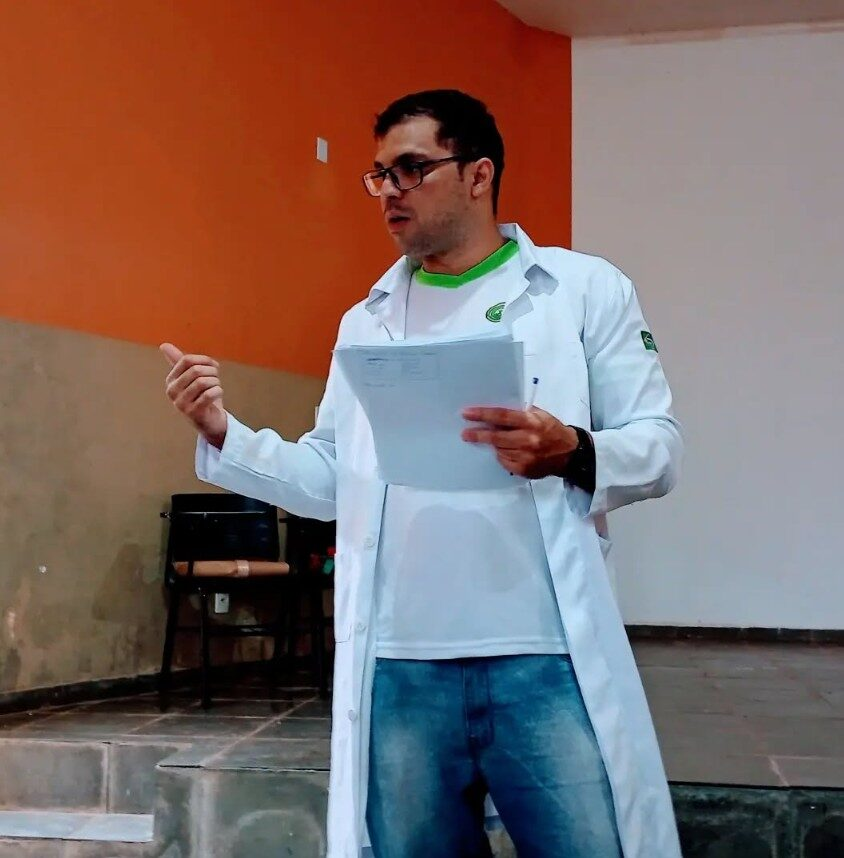

Cheguei sem saber por onde começar e encontrei um espaço sério, sem julgamentos. Hoje entendo melhor meus próprios padrões de comportamento.
Marina S.
Psicoterapia com sentido
Um cuidado que ajuda você a encontrar sentido, não apenas alívio.
Hercules Freire é psicólogo clínico em Cuiabá, com pós-graduação em Análise do Comportamento Aplicada (ABA) e abordagem em Logoterapia. Atendimento online e presencial, com ampla experiência em dependência química.
Sobre
Uma escuta clínica, técnica e humana
Mudar padrões de comportamento e reconstruir um sentido de vida caminham juntos.
Ao longo da carreira, Hercules construiu uma prática que une rigor técnico e profundidade humana. Sua formação em Análise do Comportamento Aplicada (ABA) oferece ferramentas objetivas para mudança de comportamento, enquanto a Logoterapia — abordagem centrada na busca de sentido, desenvolvida por Viktor Frankl — sustenta um olhar mais amplo sobre a experiência de cada pessoa.
Essa combinação se mostra especialmente relevante no acompanhamento de pessoas em tratamento de dependência química, área na qual Hercules acumulou ampla experiência clínica.
- Psicólogo Clínico — CRP 18/05709
- Pós-graduação em Análise do Comportamento Aplicada (ABA)
- Abordagem clínica em Logoterapia
- Ampla experiência em dependência química
- Atendimento online e presencial, em Cuiabá-MT
Abordagem
Sentido e comportamento, lado a lado
Duas ferramentas complementares orientam o trabalho clínico: uma olha para o que fazemos, a outra para o porquê fazemos.
01
Logoterapia
Desenvolvida por Viktor Frankl, parte da ideia de que a busca por sentido é a principal força motivadora do ser humano. Na prática clínica, isso significa ajudar cada pessoa a identificar valores, propósitos e significados próprios — mesmo diante de dor, perda ou crise — em vez de apenas eliminar sintomas.
02
Análise do Comportamento Aplicada
A ABA estuda como o comportamento é aprendido e mantido, oferecendo estratégias concretas para modificar padrões que não servem mais. É uma abordagem baseada em evidências, especialmente útil quando o objetivo envolve mudanças de hábito, autorregulação e prevenção de recaída.

Formação contínua
A atualização constante através de capacitações e formações é parte do compromisso de Hercules com uma prática clínica responsável — sobretudo no acompanhamento de casos complexos, como os que envolvem dependência química.
Especialidades
Áreas de atuação
Dependência química
Acompanhamento no tratamento e na prevenção de recaídas, com foco em mudança de comportamento e reconstrução de sentido.
Ansiedade e crises
Apoio em momentos de sobrecarga emocional, crises existenciais e dificuldade de lidar com mudanças.
Sentido e propósito
Espaço para refletir sobre valores, escolhas e direção de vida a partir dos princípios da Logoterapia.
Mudança de comportamento
Estratégias práticas baseadas em ABA para modificar hábitos e padrões que não servem mais.
Primeiros passos
Como funciona o início do acompanhamento
1
Contato pelo WhatsApp
Você entra em contato e alinha horários e formato de atendimento.
2
Sessão de acolhimento
Uma primeira conversa para entender sua história e o que te trouxe até aqui.
3
Plano terapêutico
Definição conjunta de objetivos e do formato de acompanhamento mais adequado.
4
Acompanhamento contínuo
Sessões regulares, com revisão periódica dos objetivos e do processo.
Atendimento
Online ou presencial, no seu ritmo
Presencial — Cuiabá, MT
Atendimento em consultório, para quem prefere o encontro presencial.
- Ambiente reservado e acolhedor
- Horários combinados previamente
Online — todo o Brasil
Sessões por videochamada, com a mesma qualidade clínica do atendimento presencial.
- Flexibilidade de horário e local
- Ideal para quem está fora de Cuiabá
Depoimentos
Relatos de quem já passou pelo acompanhamento
Depoimentos ilustrativos, compartilhados de forma anonimizada — nomes completos e imagens não são divulgados, em respeito ao sigilo profissional.
O acompanhamento online funcionou muito bem para a minha rotina. Senti evolução real, com metas claras a cada etapa do processo.
Rodrigo A.No momento mais difícil da recuperação, encontrei escuta e direção. O olhar para o sentido fez diferença em como encarei o processo todo.
Carlos E.
Dúvidas frequentes
Perguntas comuns antes de começar
É uma abordagem criada por Viktor Frankl que entende a busca por sentido como motor central da vida humana. Na prática clínica, ajuda a pessoa a encontrar significado mesmo diante de dificuldades, em vez de apenas tratar sintomas isoladamente.
As sessões acontecem por videochamada, no mesmo formato e duração do atendimento presencial. Você só precisa de um lugar tranquilo e conexão com a internet.
Varia de pessoa para pessoa e depende dos objetivos definidos na sessão de acolhimento. O andamento é revisado periodicamente ao longo do acompanhamento.
Sim. Essa é uma das áreas de maior experiência prática de Hercules, combinando estratégias de mudança de comportamento (ABA) com a reconstrução de sentido proposta pela Logoterapia.
Pronto para dar o primeiro passo?
Fale agora pelo WhatsApp e agende sua primeira sessão.
(65) 99308-5010